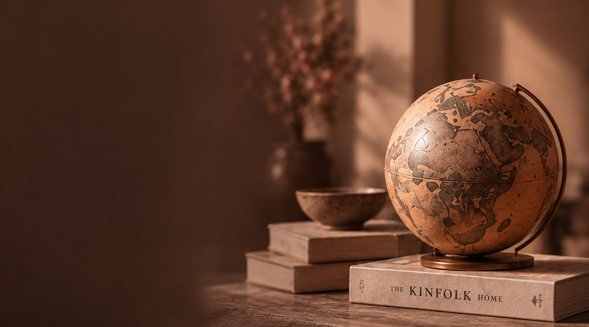

Choose your
world of RSN.
Same extraordinary curation.
Different worlds to explore.

Local
Roots.
Timeless
Beauty.
RSNOne
Nepal
Extraordinary objects
from the heart of Nepal.

A more
Thoughtful
way to live.
RSNOne
Global Select
Extraordinary makers
from around the world.
Different places.
A more meaningful home.